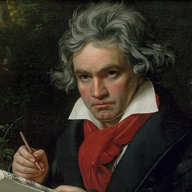

작곡가 › 루트비히 판 베토벤

루트비히 판 베토벤
고전주의와 낭만주의를 잇는 다리. 완전히 귀가 먼 뒤에도 걸작을 계속 작곡했습니다.
생애
1770년 12월 독일 본에서 태어났습니다. 궁정 가수였던 아버지는 모차르트처럼 신동으로 무대에 세우려고 그를 몰아붙였습니다.
1792년 빈으로 옮겨 하이든에게 배웠고, 압도적인 즉흥 연주로 유명한 피아니스트가 되었습니다. 서른 살 무렵부터 청력을 잃기 시작했고, 1802년 동생들에게 보낸 편지 「하일리겐슈타트 유서」에 절망을 털어놓았지만 계속 작곡하기로 결심했습니다.
피아노 소나타 32곡, 교향곡 9곡, 협주곡과 현악 사중주 등을 썼습니다. 이미 귀가 들리지 않던 1824년에 초연된 「교향곡 9번」은 「환희의 송가」로 끝나며, 오늘날 유럽연합의 노래가 되었습니다.
초상: Joseph Karl Stieler (1820), 퍼블릭 도메인, 출처 위키미디어 공용.

흥미로운 이야기
- 「엘리제를 위하여」는 베토벤이 직접 출판한 곡이 아닙니다. 악보는 그가 죽고 40년 뒤인 1867년에야 발견되어 출판되었고, 「엘리제」가 누구인지는 확실히 알려져 있지 않습니다.
- 「월광」이라는 이름은 베토벤이 붙인 것이 아닙니다. 평론가 루트비히 렐슈타프가 1악장을 루체른 호수 위의 달빛에 비유한 데서 나왔습니다.
- 거의 귀가 들리지 않게 되자 보청 나팔을 쓰고, 나무 막대를 피아노에 대어 소리를 느꼈습니다.
피아노 앞에서
- 베토벤의 음악은 대비로 살아 있습니다. 갑작스러운 피아노와 포르테, 악센트, 쉼표. 악보에 적힌 셈여림을 지키세요.
- 「월광」 1악장에서는 화음이 바뀔 때마다 페달을 바꿔 소리가 탁해지지 않게 하세요.
- 빠른 패시지는 메트로놈으로 천천히 연습하고, 속도를 조금씩 올리세요.
배울 수 있는 곡 7곡

Piano Learning으로 한 음씩 배워 보세요
‘음 기다리기’ 모드에서는 맞는 건반을 칠 때까지 곡이 멈춥니다. 휴대폰에서도, 내 피아노에서도 가능해요(앱이 소리를 들어요). 한 손씩 연습, 속도는 10%부터, 악보는 늘 눈앞에.
Google Play에서 무료로 받기 라 캄파넬라, 터키 행진곡, 징글벨, 프레르 자크처럼 무료. 그 밖의 수백 곡은 한 번의 구매로, 구독 없이.